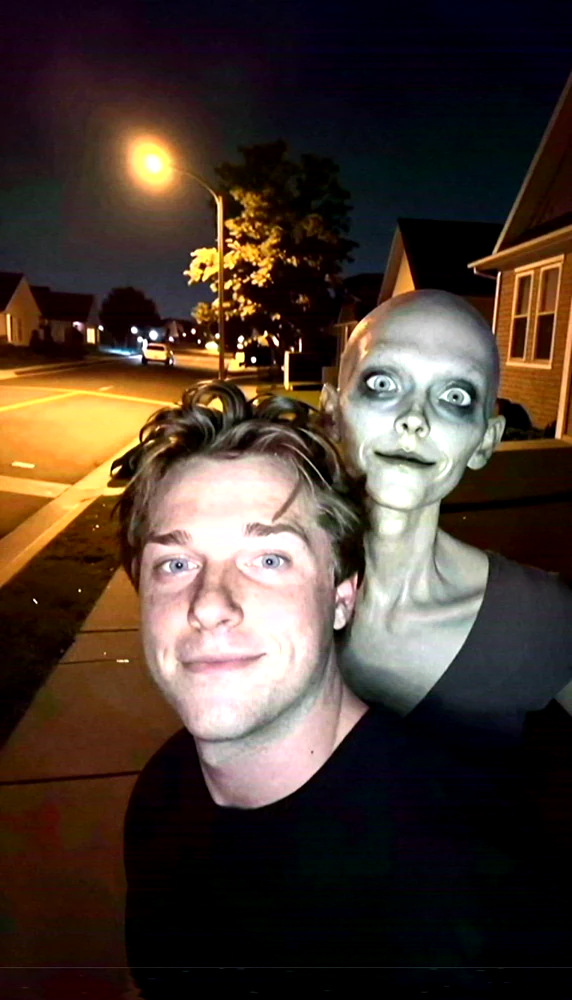

Date Night: a photoreal VHS clip from a new ComfyUI workflow
Date Night is a short photoreal VHS clip from a new ComfyUI workflow.

Still
Z-Image Turbo and a found-footage LoRA make the still. A mild VHS grade sits on top.
Performance
Wan 2.2 speech-to-video drives the lip-synced performance. The voice is neural TTS.
Render
Image and motion render locally on an RTX 2070, an 8 GB GPU. The clip is 4.75 seconds at 720×1248, 16 fps.
Where it was posted
Part of the Photoreal VHS Workflow project
View the project →